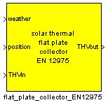
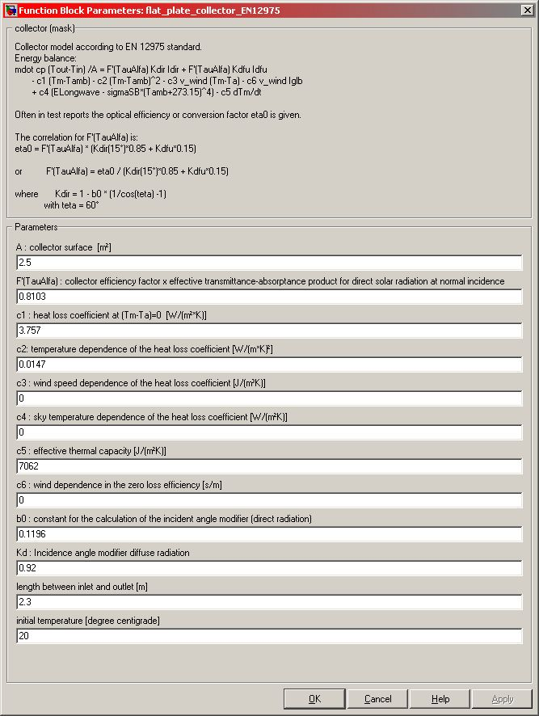

flat
plate collector EN12975
Path: CARNOT/heat_source
Purpose
Collector model according to EN 12975 standard.
Description
Energy balance:
mdot cp (Tout-Tin) /A = F'(TauAlfa) Kdir Idir + F'(TauAlfa) Kdfu
Idfu
- c1 (Tm-Tamb) - c2 (Tm-Tamb)² - c3
v_wind (Tm-Ta) - c6 v_wind Iglb
+ c4 (ELongwave -
sigmaSB*(Tamb+273.15)4) - c5 dTm/dt
Often in test reports the optical efficiency or conversion factor eta0 is given.
The correlation for F'(TauAlfa) is:
eta0 = F'(TauAlfa) * (Kdir(15°)*0.85 + Kdfu*0.15)
or F'(TauAlfa) = eta0 / (Kdir(15°)*0.85 + Kdfu*0.15)
where Kdir = 1 - b0 *
(1/cos(teta) -1)
with
teta = 60°
|
symbol |
used for |
unit |
|
A |
collector aperture area (or absorber area, depending on the referenced parameters c1...c6) |
m² |
|
bo |
constant for the calculation of the incident angle modifier |
|
|
c1 |
heat loss coefficient at (Tm - Ta)=0 |
W/(m²K) |
|
c2 |
temperature dependence of the heat loss coefficient |
W/(m²K²) |
|
c3 |
wind speed dependence of the heat loss coefficient |
J/(m³K) |
|
c4 |
sky temperature dependence of the heat loss coefficient |
W/(m²K) |
|
c5 |
effective thermal capacity |
J/(m²K) |
|
c6 |
wind dependence in the zero loss efficiency |
s/m |
|
eta0 |
optical collector efficiency |
|
|
F' |
collector fin efficiency factor |
|
|
TauAlfa |
effective transmittance-absorptance product for direct solar radiation at normal incidence |
|
|
teta |
incidence angle of the direct radiation on the collector |
degree |
|
Tm |
mean collector node temperature |
°C |
|
Tamb |
ambient temperature |
°C |
|
v_wind |
wind velocity |
m/s |
|
ELongwave |
longwave irradiance with wave length > 3000 nm |
W/m² |
|
Iglb |
global solar radiation on the collector plane |
W/m² |
|
Idir |
direct solar radiation on the collector plane |
W/m² |
|
Idfu |
diffuse solar radiation on the collector plane |
W/m² |
|
Kdir |
incidence angle modifer for direct solar radiation |
|
|
Kdfu |
incidence angle modifier for diffuse solar radiation |
|
|
sigmaSB |
Stefan-Boltzmann constant |
W/(m²K4) |
Parameters and Dialog Box

Characteristics
Direct Feedthrough Yes
Sample
time
Inherited
from driving block
States
1
Vectorized
No